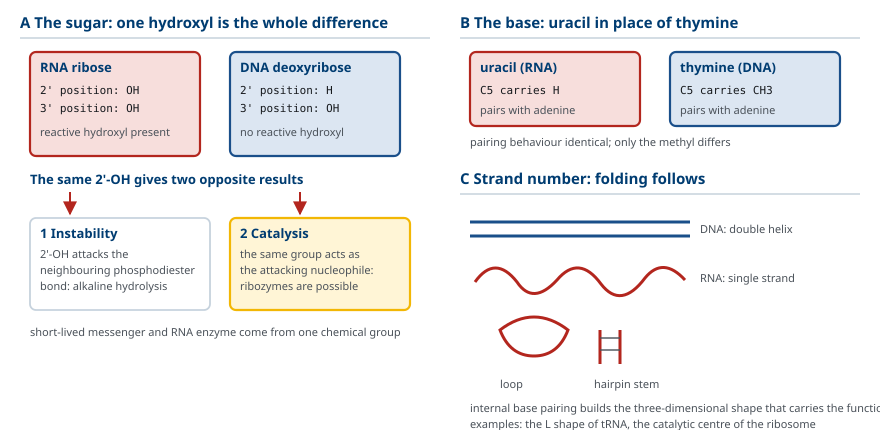
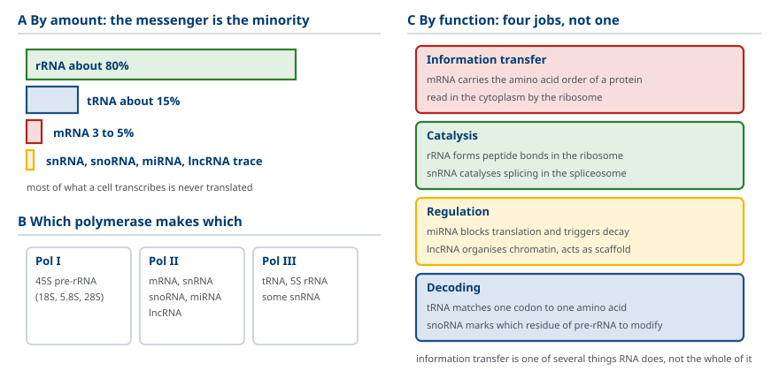
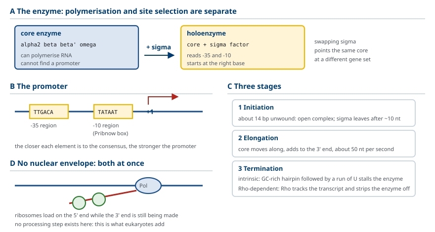
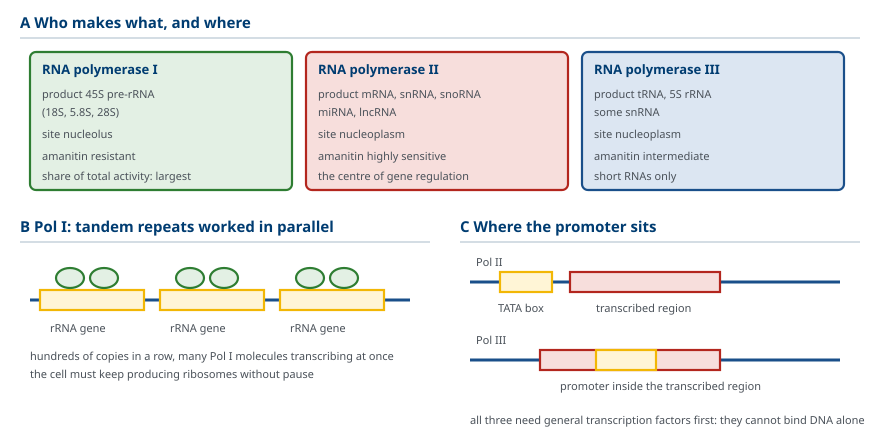
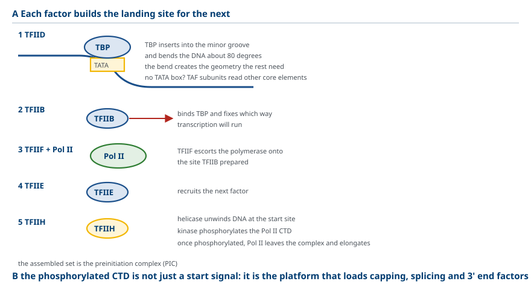
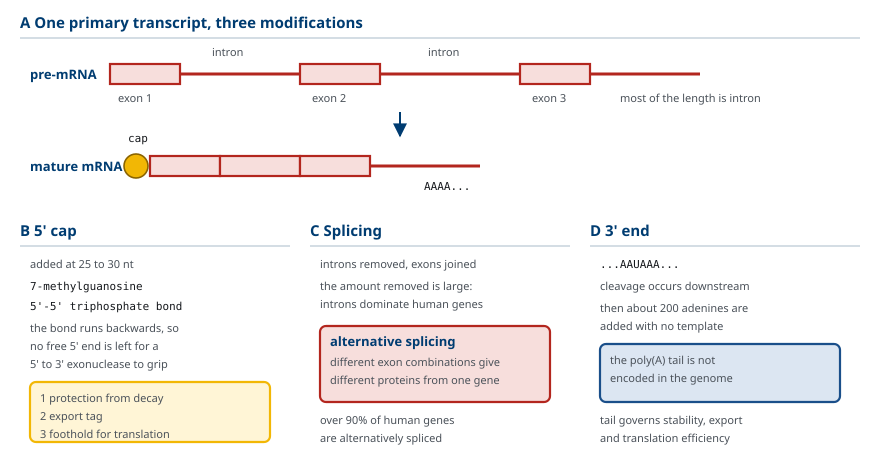
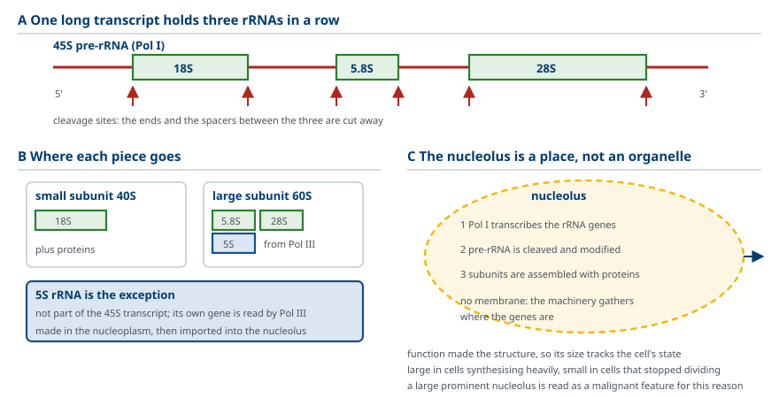
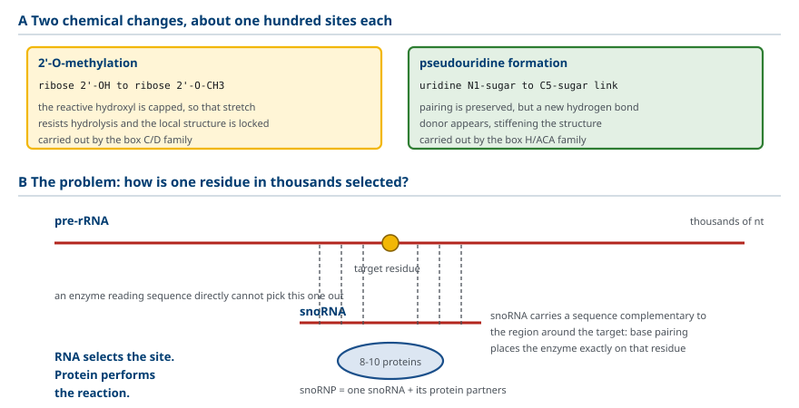
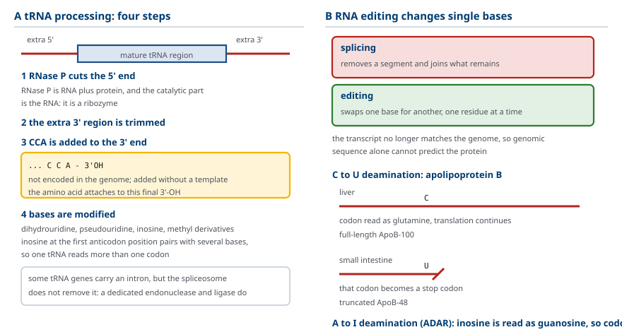
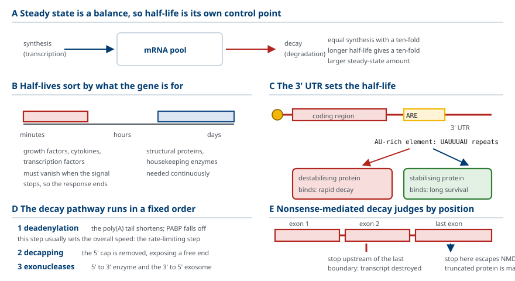

M01-W07-L01 · 인체일반생물학과 기초세포생물학
RNA 합성과 가공
RNA Synthesis and Processing
학습목표
- 중심원리에서 RNA가 차지하는 위치를 쓰고 RNA와 DNA의 화학적 차이 세 가지와 그 결과를 설명한다.
- 세포 안 RNA의 종류를 기능으로 분류하고 각 종류를 만드는 효소를 연결한다.
- 세균 RNA polymerase의 구성과 sigma 인자의 역할을 쓰고 전사의 세 단계를 서술한다.
- 진핵세포의 세 가지 핵 RNA polymerase를 산물·promoter·억제제로 구분한다.
- Pol II의 preinitiation complex가 조립되는 순서를 쓰고 각 general transcription factor의 역할을 설명한다.
- pre-mRNA가 거치는 세 가공을 개요 수준에서 서술하고 각 가공의 결과를 쓴다.
- 45S pre-rRNA가 세 rRNA로 가공되는 과정을 설명하고 nucleolus의 기능을 쓴다.
- snoRNP가 수행하는 두 가지 화학 변형을 쓰고 변형이 필요한 이유를 설명한다.
- tRNA 가공의 네 단계를 쓰고 CCA 부가가 유전체에 암호화되지 않는다는 점의 의미를 설명한다.
- RNA editing의 두 방식을 구분하고 splicing과의 차이를 설명한다.
- mRNA 반감기가 발현량을 정하는 원리를 쓰고 분해 경로의 순서를 서술한다.
선수지식
- M01-W06-L02 유전자와 유전체의 구성 — exon과 intron, 유전자 구조
- M01-W06-L03 DNA 복제·복구와 유전체 재배열 — 주형 의존 중합, polymerase의 작동 방식
- M01-W05-L02 핵산의 구조 — 당, 염기, 인산diester 결합
강의 구성
- 1. 중심원리 속의 RNA와 RNA의 화학
- 2. RNA의 종류와 기능 분담
- 3. 세균의 전사 — RNA polymerase와 sigma 인자
- 4. 진핵세포의 세 가지 핵 RNA polymerase
- 5. Pol II의 전사 개시 — preinitiation complex의 조립
- 6. pre-mRNA 가공의 세 단계 — 개요
- 7. rRNA의 가공과 nucleolus
- 8. snoRNP에 의한 rRNA의 화학 변형
- 9. tRNA의 가공과 RNA editing
- 10. mRNA의 안정성과 분해
1. 중심원리 속의 RNA와 RNA의 화학
유전정보는 DNA에 저장되고 단백질로 발현된다. 그 사이를 잇는 것이 RNA다. 이 흐름을 중심원리(central dogma) 라 부르고, DNA에서 RNA를 만드는 단계를 전사(transcription), RNA에서 단백질을 만드는 단계를 번역(translation) 이라 한다.
RNA가 중간에 끼어 있는 이유를 먼저 분명히 해야 한다. 세 가지 이점이 있다.
증폭. 하나의 유전자에서 수백 개의 전사체를 만들 수 있고, 각 전사체에서 다시 수백 개의 단백질을 만들 수 있다. 두 단계가 곱해져 유전자 하나가 막대한 양의 단백질을 낼 수 있다.
조절 지점의 추가. 전사의 양, 전사체의 가공, 전사체의 수명, 번역의 효율이 모두 별개의 조절 지점이 된다. DNA에서 단백질로 바로 간다면 조절할 자리가 하나뿐이다.
원본의 보호. 사용되는 것은 복사본이고 원본인 DNA는 핵 안에 남는다.
RNA와 DNA의 차이는 세 가지이며, 각 차이가 기능의 차이로 이어진다.
차이 1: 당. RNA는 ribose, DNA는 deoxyribose를 쓴다. Ribose는 2′ 위치에 hydroxyl기를 가진다. 이 2′-OH는 두 가지 결과를 낳는다. 첫째, 인접한 인산diester 결합을 공격할 수 있어 RNA가 알칼리 조건에서 쉽게 가수분해된다. RNA가 DNA보다 불안정한 이유다. 둘째, 바로 그 반응성 때문에 RNA가 촉매로 작동할 수 있다. 2′-OH가 공격하는 기가 되기 때문이다.
차이 2: 염기. RNA는 thymine 대신 uracil을 쓴다. Uracil은 thymine에서 5번 탄소의 methyl기가 없는 형태다. 짝짓기 성질은 같다.
차이 3: 가닥 수. DNA는 이중나선이고 RNA는 보통 단일가닥이다. 단일가닥인 RNA는 자기 자신과 염기쌍을 이루어 입체 구조를 만든다. 머리핀, 고리, 가짜 매듭 같은 구조가 생기고, 이 구조가 RNA의 기능을 결정한다. tRNA의 L자 구조와 ribosome의 촉매 중심이 모두 이렇게 접힌 RNA다.

2. RNA의 종류와 기능 분담
세포 안의 RNA는 한 종류가 아니다. 전체 RNA의 양으로 보면 rRNA가 압도적이고 mRNA는 소수다. 기능으로 분류하면 다음과 같다.
| RNA | 전체 RNA 중 비율 | 기능 | 만드는 효소 |
|---|---|---|---|
| rRNA (ribosomal RNA) | 약 80% | ribosome의 구조와 peptide 결합 촉매 | Pol I (5S는 Pol III) |
| tRNA (transfer RNA) | 약 15% | 아미노산 운반, codon 해독 | Pol III |
| mRNA (messenger RNA) | 약 3~5% | 단백질의 아미노산 순서 지정 | Pol II |
| snRNA (small nuclear RNA) | 소량 | spliceosome의 구성과 촉매 | Pol II |
| snoRNA (small nucleolar RNA) | 소량 | pre-rRNA 변형 위치 지정 | Pol II |
| miRNA (microRNA) | 소량 | mRNA의 번역 억제와 분해 | Pol II |
| lncRNA (long non-coding RNA) | 소량 | 염색질 조절, 골격 | Pol II |
이 표에서 두 가지를 읽어야 한다.
첫째, 단백질을 암호화하지 않는 RNA가 다수다. 사람 유전체에서 전사되는 영역의 대부분은 단백질을 만들지 않는다. 이 사실이 발견되기 전에는 전사의 목적이 곧 번역이라고 생각했다.
둘째, RNA는 전령 이상이다. rRNA와 snRNA는 촉매로, miRNA와 lncRNA는 조절자로, tRNA는 해독기로 작동한다. 정보 전달은 RNA가 하는 여러 일 가운데 하나다.

3. 세균의 전사 — RNA polymerase와 sigma 인자
전사의 기본형을 세균에서 먼저 익힌다. 구성이 단순하고 조절이 직접적이기 때문이다.
대장균의 RNA polymerase는 다섯 개의 소단위로 된 복합체다. α 두 개, β, β′, ω가 core enzyme을 이루고, 여기에 sigma(σ) 인자가 붙으면 holoenzyme이 된다.
여기서 중요한 분업이 있다. Core enzyme은 중합을 하지만 promoter를 찾지 못한다. 어디서 시작할지 아는 것은 sigma 인자다. Sigma가 붙은 holoenzyme만 올바른 지점에서 전사를 시작할 수 있다.
Sigma가 인식하는 것은 두 개의 보존 서열이다. 전사 시작점을 +1로 할 때 −10 영역(TATAAT, Pribnow box) 과 −35 영역(TTGACA) 이다. 두 서열이 합의 서열에 가까울수록 강한 promoter다.
전사는 세 단계로 진행한다.
개시(initiation). Holoenzyme이 promoter에 결합하고, DNA 약 14 염기쌍을 풀어 open complex를 만든다. 첫 nucleotide가 들어오고 사슬이 약 10 염기를 넘으면 sigma가 떨어진다.
신장(elongation). Core enzyme이 DNA를 따라 이동하며 3′ 방향으로 RNA를 늘린다. 속도는 초당 약 50 염기다. Polymerase가 지나간 자리에서 DNA는 다시 이중나선으로 닫힌다.
종결(termination). 두 방식이 있다. 내재적 종결은 전사체에 GC가 풍부한 머리핀이 생기고 그 뒤에 U 연속 구간이 오면서 polymerase가 멈추는 방식이다. Rho 의존 종결은 Rho 단백질이 전사체를 따라 올라가 polymerase를 떼어내는 방식이다.
세균에서는 전사와 번역이 동시에 일어난다. 핵막이 없으므로 전사체의 5′ 쪽에 이미 ribosome이 붙어 번역이 시작된다. 이 결합이 진핵세포와의 가장 큰 차이이며, 다음 절에서 다룰 가공의 필요성이 세균에는 없는 이유다.

4. 진핵세포의 세 가지 핵 RNA polymerase
진핵세포는 하나의 RNA polymerase로 모든 RNA를 만들지 않는다. 핵 안에 세 가지가 있고, 각자 다른 유전자를 담당한다.
| 구분 | Pol I | Pol II | Pol III |
|---|---|---|---|
| 산물 | 45S pre-rRNA (18S, 5.8S, 28S) | mRNA, snRNA, snoRNA, miRNA, lncRNA | tRNA, 5S rRNA, 일부 snRNA |
| 위치 | nucleolus | 핵질 | 핵질 |
| promoter 요소 | core 요소, upstream 조절 요소 | TATA box, Inr, 기타 core promoter 요소 | 유전자 내부 또는 상류 |
| α-amanitin 감수성 | 저항 | 매우 민감 | 중간 |
| 전체 전사 활성 중 비율 | 가장 큼 | 중간 | 중간 |
이 분담에서 읽어야 할 점이 있다.
Pol I은 한 종류의 유전자만 전사한다. rRNA 유전자는 수백 개의 사본이 연속해 배열되어 있고, Pol I이 그 위에 빽빽하게 달라붙어 동시에 전사한다. 세포가 ribosome을 끊임없이 만들어야 하므로 전체 전사 활성 중 가장 큰 몫을 차지한다.
Pol II가 조절의 중심이다. 단백질을 암호화하는 모든 유전자와 조절 RNA의 대부분을 담당하므로, 유전자 발현 조절을 말할 때 대상은 거의 언제나 Pol II다.
Pol III는 짧은 RNA를 담당한다. 특이한 점은 promoter가 유전자 내부에 있는 경우가 있다는 것이다. 전사될 영역 자체가 결합 신호를 포함한다.
세 polymerase 모두 세균과 다른 공통점이 있다. promoter에 직접 결합하지 못한다. 별도의 단백질이 먼저 결합해 자리를 만들어 주어야 하고, 그 단백질을 general transcription factor라 부른다. 세균의 sigma 인자가 polymerase의 한 부분이었던 것과 달리, 진핵세포에서는 그 역할이 독립된 여러 단백질로 나뉘어 있다. 조절할 수 있는 지점이 그만큼 늘어난다.

5. Pol II의 전사 개시 — preinitiation complex의 조립
Pol II가 promoter에 앉는 과정은 정해진 순서가 있다. 이 순서를 외우는 것이 아니라 왜 순서가 있는지를 이해해야 한다. 각 인자가 다음 인자의 결합 자리를 만들기 때문이다.
전사 시작점 상류 약 −25에 TATA box가 있다. 여기에 결합하는 것이 첫 단계다.
TFIID. 구성 요소인 TBP(TATA-binding protein) 가 TATA box에 결합한다. TBP는 DNA의 작은 홈에 끼어들어 DNA를 약 80° 구부린다. 이 굽힘이 다음 인자들이 모일 수 있는 기하 구조를 만든다. TATA box가 없는 promoter에서는 TFIID의 다른 소단위(TAF)가 다른 core promoter 요소를 인식한다.
TFIIB. TBP에 붙어 방향을 정한다. TFIIB의 결합 위치가 전사가 어느 쪽으로 진행할지를 결정한다.
TFIIF와 Pol II. TFIIF가 Pol II와 함께 들어와 TFIIB가 만든 자리에 polymerase를 앉힌다.
TFIIE. 다음 인자를 불러들인다.
TFIIH. 두 가지 효소 활성을 가진다. Helicase 활성으로 전사 시작점의 DNA를 풀어 주형 가닥을 노출시키고, kinase 활성으로 Pol II의 C 말단 꼬리(CTD) 를 인산화한다. 인산화가 일어나면 Pol II가 개시 복합체에서 풀려나 신장으로 전환한다.
여기까지 조립된 것을 preinitiation complex(PIC) 라 한다.
CTD의 인산화는 단순한 출발 신호가 아니다. 인산화된 CTD는 가공 인자들이 붙는 플랫폼이 된다. 전사가 진행되는 동안 CTD의 인산화 양상이 바뀌면서 cap을 붙이는 효소, splicing 인자, 3′ 말단 가공 인자가 차례로 불려 온다. 전사와 가공이 하나로 묶이는 구조적 근거가 여기에 있다.
| 인자 | 역할 |
|---|---|
| TFIID (TBP) | TATA box 결합, DNA 굽힘 |
| TFIIB | 방향 결정, Pol II 결합 자리 제공 |
| TFIIF | Pol II와 함께 진입 |
| TFIIE | TFIIH 모집 |
| TFIIH | DNA 풀기(helicase), CTD 인산화(kinase) |

6. pre-mRNA 가공의 세 단계 — 개요
Pol II가 만든 1차 전사체는 그대로 쓰이지 않는다. 5′ cap 부가, splicing, 3′ 말단 절단과 polyadenylation의 세 가공을 거쳐야 성숙한 mRNA가 된다. 세 가공의 상세한 기전은 M03-W02-L03에서 다루므로, 여기서는 각 가공이 무엇을 하고 어떤 결과를 남기는지만 확정한다.
5′ cap. 전사체가 25~30 염기일 때 5′ 말단에 7-methylguanosine이 붙는다. 결합이 특이하다. 일반적인 RNA 결합은 5′와 3′를 잇지만, cap은 5′-5′ 삼인산 결합이다. 자유로운 5′ 말단이 없어지므로 5′→3′ exonuclease가 공격할 자리가 사라진다. Cap은 분해 방지, 핵 밖 수송의 표시, 번역 개시의 발판 세 가지로 쓰인다.
Splicing. Intron이 제거되고 exon이 이어진다. 사람 유전자에서 전사체 길이의 대부분이 intron이므로 제거량이 매우 크다. Exon을 어떻게 조합하느냐에 따라 같은 유전자에서 여러 단백질이 나올 수 있다. 이것이 대체 splicing(alternative splicing) 이며, 사람 유전자의 90% 이상이 대체 splicing을 거친다.
3′ 말단 가공. 전사체에 AAUAAA 서열이 나타난 뒤 하류에서 절단되고, 주형 없이 약 200개의 A가 붙는다. 이 poly(A) 꼬리는 유전체에 암호화되어 있지 않다. 꼬리는 안정성, 핵 밖 수송, 번역 효율에 관여한다.
세 가공을 묶으면 두 가지 성격이 보인다.
가공은 품질 관문이다. 가공이 완료되지 않은 전사체는 핵을 떠나지 못하고 분해된다. 올바르게 가공된 전사체만 번역에 쓰인다.
가공은 전사와 동시에 일어난다. 전사가 끝난 뒤 따로 가공하는 것이 아니다. Pol II의 CTD에 가공 인자가 실려 있으므로 전사체가 나오는 동시에 가공이 진행된다.

7. rRNA의 가공과 nucleolus
mRNA 가공과 달리 rRNA와 tRNA의 가공은 하나의 긴 전사체를 잘라 여러 산물을 얻는 방식이 중심이다. 세균과 진핵세포에 공통된 전략이다.
진핵세포에서 Pol I은 45S pre-rRNA라는 하나의 긴 전사체를 만든다. 여기에 세 rRNA가 한 줄로 들어 있다.
5′ 쪽부터 18S — 5.8S — 28S 순서이고, 사이사이와 양 끝에 제거될 구간이 있다. 가공은 양 끝을 자르고 사이를 잘라 세 조각을 분리하는 과정이다.
18S는 small subunit(40S)에 들어가고, 5.8S와 28S는 large subunit(60S)에 들어간다. 남은 하나인 5S rRNA는 45S에 포함되어 있지 않다. 별도의 유전자에서 Pol III가 따로 전사하고, 핵질에서 만들어진 뒤 nucleolus로 들어온다.
이 모든 일이 nucleolus에서 일어난다. Nucleolus는 막으로 둘러싸인 소기관이 아니다. rRNA 유전자가 모여 있는 곳에 전사·가공·조립 기구가 집적되어 만들어진 구조다. 기능이 구조를 만든 것이고, 그 기능은 세 가지다.
rRNA 유전자의 전사(Pol I), pre-rRNA의 절단과 변형, ribosome 소단위의 조립이다. 조립된 소단위는 핵 밖으로 나가 세포질에서 합쳐진다.
Nucleolus의 크기는 세포의 상태를 반영한다. 단백질 합성이 활발한 세포에서 nucleolus는 크고, 분열을 멈춘 세포에서는 작다. 세포병리에서 nucleolus가 크고 뚜렷한 것을 악성의 소견으로 보는 근거가 여기에 있다. 빠르게 자라는 세포는 ribosome을 많이 만들어야 한다.

8. snoRNP에 의한 rRNA의 화학 변형
rRNA 가공은 절단만이 아니다. 수십 곳의 염기와 당이 화학적으로 변형된다. 사람의 rRNA에서 약 100곳의 ribose가 methyl화되고 약 100곳의 uridine이 pseudouridine으로 바뀐다.
변형의 두 종류를 구분한다.
2′-O-methylation. Ribose의 2′ hydroxyl기에 methyl기가 붙는다. 반응성 있는 2′-OH가 가려지므로 그 지점의 RNA가 가수분해에 더 강해지고 구조가 고정된다.
Pseudouridine 형성. Uridine의 염기가 당과 연결되는 위치가 N1에서 C5로 바뀐다. 짝짓기 성질은 유지되면서 추가 수소결합을 할 수 있는 자리가 생겨 구조를 더 단단하게 만든다.
문제는 어떻게 특정 위치만 변형하는가다. 효소가 서열을 직접 읽어서는 수천 염기 가운데 한 지점을 고를 수 없다. 해결 방식이 snoRNA다.
snoRNP(small nucleolar ribonucleoprotein) 는 하나의 snoRNA와 8~10개의 단백질로 된 복합체다. snoRNA는 pre-rRNA의 변형될 지점 주변과 염기쌍을 이룰 수 있는 서열을 가진다. snoRNA가 결합하면 복합체의 효소가 정확히 그 지점에 놓이고, 변형이 일어난다.
snoRNA는 두 계열로 나뉘고 각각 한 종류의 변형을 담당한다. box C/D 계열이 2′-O-methylation을, box H/ACA 계열이 pseudouridine 형성을 수행한다.

9. tRNA의 가공과 RNA editing
tRNA의 가공. Pol III가 만든 pre-tRNA도 여러 단계를 거친다.
5′ 말단 절단. RNase P가 여분의 5′ 구간을 자른다. RNase P는 RNA와 단백질로 되어 있고, 촉매 활성을 가진 쪽이 RNA다. 즉 ribozyme이다.
3′ 말단 절단. 여분의 3′ 구간이 제거된다.
CCA 부가. 3′ 말단에 C-C-A 세 nucleotide가 붙는다. 이 서열은 유전체에 암호화되어 있지 않다. 전용 효소가 주형 없이 붙인다. 아미노산이 결합하는 자리가 바로 이 A의 3′-OH이므로, CCA 없이는 tRNA가 아미노산을 실을 수 없다.
염기 변형. 수십 종의 변형 염기가 만들어진다. dihydrouridine, pseudouridine, inosine, 여러 methyl 유도체가 그 예다. 특히 anticodon 첫 자리의 inosine은 여러 염기와 짝지을 수 있어 하나의 tRNA가 여러 codon을 읽게 한다.
일부 tRNA 유전자에는 intron이 있다. 이 intron은 spliceosome이 제거하지 않는다. 전용 endonuclease와 ligase가 처리하며, 기전이 pre-mRNA splicing과 완전히 다르다.
RNA editing. Splicing이 구간을 제거하는 것이라면, editing은 개별 염기를 바꾸는 것이다. 전사체의 서열이 유전체의 서열과 달라지므로 유전체만 보고 단백질 서열을 예측할 수 없게 된다. 사람에서 두 방식이 알려져 있다.
C→U 탈아미노화. Cytosine이 uracil로 바뀐다. 대표 예가 apolipoprotein B다. 간에서는 전사체가 그대로 번역되어 전장 단백질 ApoB-100이 만들어진다. 소장에서는 특정 위치의 C가 U로 바뀌어 그 codon이 종결 codon이 되고, 짧은 ApoB-48이 만들어진다. 하나의 유전자에서 조직에 따라 길이가 다른 두 단백질이 나온다.
A→I 탈아미노화. Adenosine이 inosine으로 바뀐다. ADAR 계열 효소가 수행하고, 이중가닥 RNA 구간에서 일어난다. Inosine은 번역 기구에서 guanosine처럼 읽히므로 codon이 바뀔 수 있다. 신경계에서 흔하며, glutamate 수용체 소단위의 editing이 통로의 Ca²⁺ 투과성을 바꾸는 것이 잘 알려진 예다.

10. mRNA의 안정성과 분해
전사량만으로 단백질의 양이 정해지지 않는다. mRNA가 얼마나 오래 남아 있는지가 함께 작용한다.
원리는 간단하다. 정상 상태에서 mRNA의 양은 합성 속도와 분해 속도의 균형으로 정해진다. 합성이 같아도 반감기가 열 배 길면 쌓이는 양이 열 배가 된다. 따라서 반감기는 전사와 독립된 조절 지점이다.
사람 mRNA의 반감기는 종류에 따라 크게 다르다. 수십 분인 것부터 며칠인 것까지 있다. 짧은 쪽에는 즉각 작용이 필요한 유전자가 모인다. 성장인자, 사이토카인, 전사인자의 mRNA가 그렇다. 신호가 끊기면 빨리 사라져야 반응이 제때 끝난다. 긴 쪽에는 구조 단백질이나 상시 필요한 효소의 mRNA가 모인다.
반감기를 정하는 서열. 3′ 비번역 구간(3′ UTR)에 있는 서열이 주로 결정한다. 대표적인 것이 AU-rich element(ARE) 이며, UAUUUAU 같은 반복을 가진다. ARE에 결합하는 단백질에 따라 결과가 갈린다. 분해를 촉진하는 단백질이 붙으면 전사체가 빨리 사라지고, 안정화하는 단백질이 붙으면 오래 남는다.
분해의 경로. 순서가 정해져 있다.
1단계: deadenylation. Poly(A) 꼬리가 짧아진다. 꼬리가 일정 길이 이하로 줄면 PABP가 떨어지고 전사체가 분해에 노출된다. 대개 이 단계가 속도를 정하는 rate-limiting step이다.
2단계: decapping. 5′ cap이 제거된다. 자유로운 5′ 말단이 드러난다.
3단계: exonuclease 분해. 5′→3′ 방향 exonuclease와 3′→5′ 방향 exosome 복합체가 전사체를 분해한다.
품질 관리 경로. 정상 분해와 별도로, 결함 있는 전사체를 제거하는 경로가 있다. Nonsense-mediated decay(NMD) 는 번역 중 비정상적으로 이른 위치에서 종결 codon을 만나면 그 전사체를 분해한다. 판정 기준은 종결 codon이 마지막 exon 경계보다 상류에 있는지다. 이 경로 때문에 종결 codon을 만드는 변이는 단백질이 짧아지는 데 그치지 않고 전사체 자체가 사라지는 결과를 낳는다.
신호에 따른 안정성 조절. 세포 상태가 mRNA의 수명을 직접 바꾼다. Transferrin receptor mRNA가 전형이다. 3′ UTR에 iron-response element(IRE) 가 있고, 철이 부족하면 IRE-binding protein이 결합해 전사체를 분해로부터 보호한다. 수용체가 많아져 철을 더 들여온다. 철이 충분하면 결합이 풀려 전사체가 분해되고 수용체가 줄어든다. 전사를 건드리지 않고 반감기만 바꾸어 발현량을 조절하는 예다.

확인 문항
RNA의 ribose가 가진 2′ hydroxyl기가 서로 반대 방향으로 보이는 두 가지 결과를 낳는다. 각각을 설명하시오.
해설
첫째, 2′-OH가 인접한 인산diester 결합을 공격할 수 있어 RNA가 알칼리 조건에서 쉽게 가수분해된다. RNA가 DNA보다 불안정하고 수명이 짧은 전령으로 쓰이는 근거다. 둘째, 바로 그 반응성 때문에 2′-OH가 공격하는 기가 될 수 있어 RNA가 촉매로 작동한다. Spliceosome의 splicing 반응과 RNase P의 절단이 그 예다. 불안정성과 촉매 활성이 같은 하나의 기에서 나온다.
세균에서 core enzyme과 holoenzyme의 기능 차이를 쓰고, 그 차이가 어떤 분업을 뜻하는지 설명하시오.
해설
Core enzyme(α2ββ′ω)은 RNA를 중합할 수 있지만 promoter를 찾지 못한다. Sigma 인자가 붙은 holoenzyme만 −35와 −10 영역을 인식해 올바른 지점에서 전사를 시작한다. 즉 중합 활성과 시작 지점의 선택이 서로 다른 소단위에 나뉘어 있고, sigma를 교체하면 같은 core enzyme이 다른 유전자군을 전사하게 되므로 이 분업 자체가 조절 수단이 된다.
진핵세포의 세 핵 RNA polymerase를 산물과 α-amanitin 감수성으로 구분하고, Pol I이 전체 전사 활성에서 가장 큰 몫을 차지하는 이유를 설명하시오.
해설
Pol I은 45S pre-rRNA(18S, 5.8S, 28S)를 nucleolus에서 만들며 α-amanitin에 저항한다. Pol II는 mRNA와 snRNA·snoRNA·miRNA·lncRNA를 만들며 α-amanitin에 매우 민감하다. Pol III는 tRNA와 5S rRNA를 만들며 중간 정도로 민감하다. Pol I의 활성이 가장 큰 이유는 세포가 ribosome을 끊임없이 만들어야 하고, rRNA 유전자가 수백 사본 연속 배열되어 그 위에 Pol I이 빽빽하게 결합해 동시에 전사하기 때문이다.
Pol II preinitiation complex의 조립에 정해진 순서가 있는 이유를 쓰고, TFIIH의 두 활성과 그 결과를 설명하시오.
해설
각 인자가 다음 인자의 결합 자리를 만들기 때문이다. TBP가 TATA box에 결합해 DNA를 약 80° 구부려 기하 구조를 만들고, TFIIB가 방향을 정하며 Pol II의 자리를 제공하고, TFIIF가 Pol II와 함께 들어오고, TFIIE가 TFIIH를 부른다. TFIIH는 helicase 활성으로 전사 시작점의 DNA를 풀어 주형을 노출시키고, kinase 활성으로 Pol II의 C 말단 꼬리를 인산화한다. 인산화로 Pol II가 개시 복합체에서 풀려 신장으로 전환하며, 인산화된 CTD는 가공 인자가 붙는 플랫폼이 된다.
α-amanitin 중독에서 섭취 후 하루 가까이 증상이 가벼운 뒤 급성 간부전이 오는 이유를 분자 기전으로 설명하시오.
해설
α-amanitin은 Pol II에 결합해 신장을 멈추므로 섭취 직후부터 간세포의 mRNA 합성이 차단된다. 그러나 이미 존재하는 mRNA와 단백질이 남아 있어 세포가 한동안 기능을 유지하고, 임상적으로는 위장관 증상만 나타난 뒤 회복한 듯 보인다. 기존 mRNA와 단백질이 반감기에 따라 소모되는 2~4일째에 비로소 세포 기능이 무너져 급성 간부전이 나타난다. 잠복기는 전사 차단과 단백질 소모 사이의 시간차이며, 이 때문에 초기 진료에서 중증도를 과소평가하기 쉽다.
45S pre-rRNA에 포함된 rRNA와 포함되지 않은 rRNA를 구분하고, nucleolus가 소기관과 다른 점을 설명하시오.
해설
45S pre-rRNA에는 5′ 쪽부터 18S, 5.8S, 28S가 한 줄로 들어 있고 가공으로 분리된다. 18S는 small subunit에, 5.8S와 28S는 large subunit에 들어간다. 5S rRNA는 45S에 포함되지 않고 별도의 유전자에서 Pol III가 전사해 nucleolus로 들어온다. Nucleolus는 막으로 둘러싸인 소기관이 아니라 rRNA 유전자가 모인 곳에 전사·가공·조립 기구가 집적되어 생긴 구조다. 기능이 구조를 만들었으므로 단백질 합성이 활발한 세포에서 크고 분열을 멈춘 세포에서 작다.
snoRNP가 pre-rRNA의 특정 위치만 변형할 수 있는 원리를 쓰고, 같은 원리를 쓰는 다른 예를 들어 설명하시오.
해설
snoRNA가 변형될 지점 주변과 염기쌍을 이룰 수 있는 서열을 가지므로, snoRNA가 결합하면 복합체의 효소가 정확히 그 지점에 놓인다. 위치를 정하는 것은 RNA이고 반응을 하는 것은 단백질이다. box C/D 계열이 2′-O-methylation을, box H/ACA 계열이 pseudouridine 형성을 담당한다. 같은 원리의 다른 예로 spliceosome의 snRNA가 splice 부위를 인식하는 것, miRNA가 표적 mRNA를 고르는 것, CRISPR의 guide RNA가 표적을 지정하는 것이 있다. 염기쌍이 서열 특이성을 얻는 가장 경제적인 방법이기 때문이다.
tRNA의 CCA 부가가 유전체에 암호화되어 있지 않다는 사실이 왜 중요한지 설명하시오.
해설
아미노산이 결합하는 자리가 CCA의 마지막 A의 3′ hydroxyl기이므로 CCA가 없으면 tRNA는 아미노산을 실을 수 없고 기능하지 못한다. 그런데 이 세 nucleotide는 유전자에 적혀 있지 않고 전용 효소가 주형 없이 붙인다. 따라서 tRNA 유전자의 서열만으로는 완성된 tRNA를 알 수 없고, 기능하는 분자의 필수 부분이 전사 후 가공에서만 만들어진다. 또 말단이 손상되어도 다시 붙여 복구할 수 있다는 이점이 있다.
RNA editing과 splicing의 차이를 쓰고, apolipoprotein B에서 editing이 만드는 결과를 설명하시오.
해설
Splicing은 전사체의 구간(intron)을 제거하고 남은 부분을 잇는 것이고, editing은 개별 염기를 다른 염기로 바꾸는 것이다. Editing이 일어나면 전사체의 서열이 유전체의 서열과 달라지므로 유전체만으로 단백질 서열을 예측할 수 없다. Apolipoprotein B에서는 간에서 전사체가 그대로 번역되어 전장 ApoB-100이 만들어지고, 소장에서는 특정 위치의 C가 U로 탈아미노화되어 그 codon이 종결 codon이 되므로 짧은 ApoB-48이 만들어진다. 하나의 유전자에서 조직에 따라 길이가 다른 두 단백질이 나온다.
mRNA 반감기가 전사와 독립된 조절 지점이 되는 이유를 쓰고, 분해 경로의 순서와 속도를 정하는 단계를 설명하시오.
해설
정상 상태에서 mRNA의 양은 합성 속도와 분해 속도의 균형으로 정해지므로, 합성이 같아도 반감기가 길면 쌓이는 양이 그만큼 많아진다. 따라서 반감기만 바꾸어도 발현량이 달라진다. 분해는 poly(A) 꼬리가 짧아지는 deadenylation으로 시작하고, 꼬리가 일정 길이 이하로 줄어 PABP가 떨어지면 5′ cap이 제거되는 decapping이 일어나고, 드러난 말단에서 5′→3′ exonuclease와 3′→5′ exosome이 분해한다. 대개 deadenylation이 전체 속도를 정하는 rate-limiting step이다.
같은 유전자에 생긴 종결 codon 변이가 위치에 따라 다른 임상 결과를 내는 이유를 nonsense-mediated decay로 설명하시오.
해설
NMD는 종결 codon이 마지막 exon 경계보다 상류에 있는지를 기준으로 전사체를 분해한다. 상류의 종결 codon은 NMD로 전사체 자체가 사라져 단순한 기능 상실이 되고, 이형접합자에서는 정상 대립유전자의 산물이 절반 남아 증상이 가볍다. 반면 마지막 exon에 있는 종결 codon은 NMD를 피하므로 짧아진 단백질이 실제로 만들어지고, 그 단백질이 정상 단백질의 기능을 방해하면 우성 음성 효과로 더 중한 표현형이 나타난다. β-thalassemia에서 변이 위치에 따라 경증과 중증이 갈리는 데 이 차이가 작용한다.
참고문헌
- Cooper GM. The Cell: A Molecular Approach. 9th ed. Chapter 6: RNA Synthesis and Processing. Oxford University Press; 2022.
- Alberts B, et al. Molecular Biology of the Cell. 7th ed. Chapter 6: How Cells Read the Genome. W.W. Norton; 2022.
- Ferré-D'Amaré AR, Scott WG. Small self-cleaving ribozymes. Cold Spring Harb Perspect Biol. 2010;2(10):a003574.
- Garneau NL, Wilusz J, Wilusz CJ. The highways and byways of mRNA decay. Nat Rev Mol Cell Biol. 2007;8(2):113-26.
- Nishikura K. A-to-I editing of coding and non-coding RNAs by ADARs. Nat Rev Mol Cell Biol. 2016;17(2):83-96.
- Kurosaki T, Popp MW, Maquat LE. Quality and quantity control of gene expression by nonsense-mediated mRNA decay. Nat Rev Mol Cell Biol. 2019;20(7):406-20.
- Lafontaine DLJ, Riback JA, Bascetin R, Brangwynne CP. The nucleolus as a multiphase liquid condensate. Nat Rev Mol Cell Biol. 2021;22(3):165-82.